ターミナルで起動するシェルを変更する
Windows 環境の場合、 Visual Studio Code で起動するシェルを変更するとデフォルトの設定では Winodows PowerShell が起動しますが、コマンドプロンプトに変更することもできます。ここでは Visual Studio Code でターミナルを開いた時に起動するシェルを変更する手順について解説します。
コマンドパレットから起動するシェルを変更する
起動するシェルを変更する方法はいくつかあります。まずコマンドパレットから行う方法です。「表示」メニューの中の「コマンドパレット」をクリックしてください。
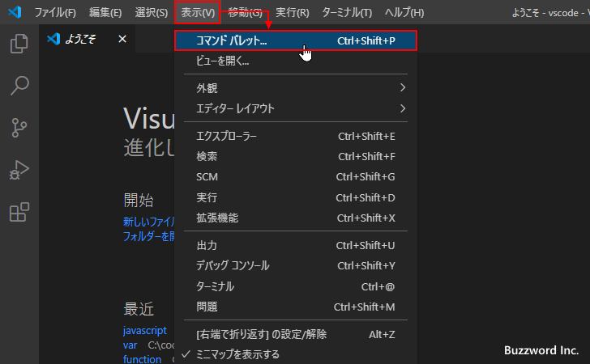
コマンドパレットが表示されます。
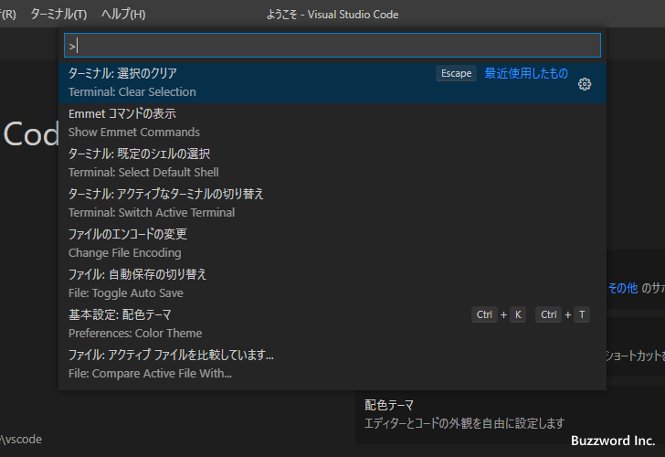
コマンドパレットが表示されたら「シェル」または「shell」と入力してください。表示されたコマンドの中から「ターミナル：既定のシェルの選択」をクリックしてください。(英語の場合は Terminal:Select Default Shell をクリックしてください)。
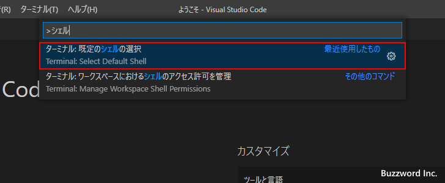
シェルを選択する画面が表示されます。「Command Prompt」と「Windows PowerShell」の 2 つの候補が表示されています。デフォルトでは「Windows PowerShell」となっています。今回は「Command Prompt」をクリックしてシェルを「Command Prompt」に変更します。
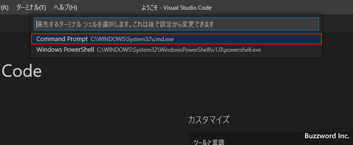
これで起動するシェルが変更されました。次回以降に新しいターミナルを開くと、シェルとしてコマンドプロンプトが起動します。
それでは「ターミナル」メニューの中の「新しいターミナル」をクリックしてターミナルを開いてください。ターミナルではコマンドプロンプトが起動しました。
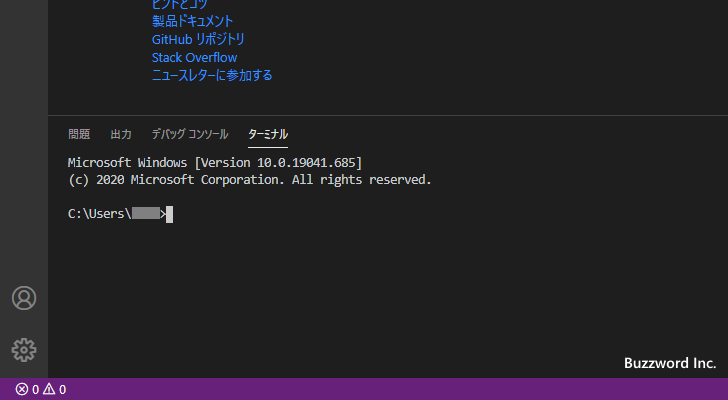
ターミナルの画面右上にあるドロップダウンメニューには現在開いているターミナルの一覧が表示されますが、「powershell」ではなく「cmd」と表示されています。
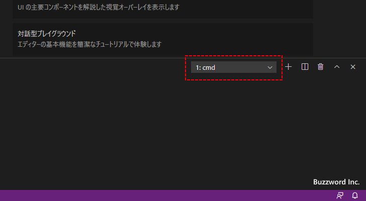
ターミナルの画面から起動するシェルを変更する
ターミナルが表示されている状態から次以降に起動するシェルを変更するには、ターミナルの画面右上に表示されているドロップダウンメニューをクリックし、表示されたメニューの中から「既定のシェルの選択」をクリックしてください。
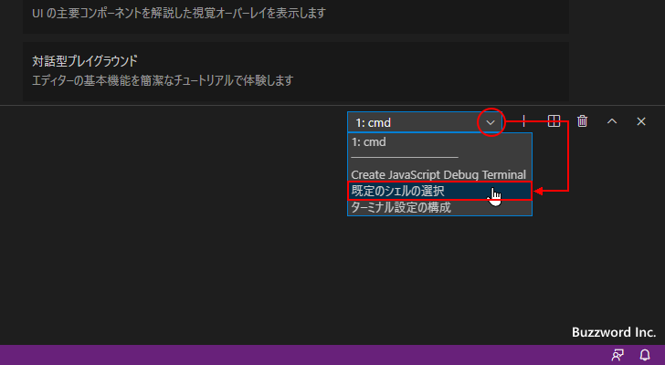
シェルを選択する画面が表示されます。「Command Prompt」と「Windows PowerShell」の 2 つの候補が表示されています。今回は「Windows PowerShell」をクリックしてシェルを「Windows PowerShell」に変更します。
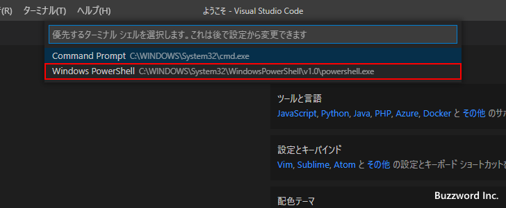
次回以降に新しいターミナルを開くとシェルとして Windows PowerShell が起動します。例として現在のターミナルを分割してみます。すると元々開いていた左側のターミナルはコマンドプロンプトですが、分割された右側のターミナルは Windows PowerShell が起動しました。

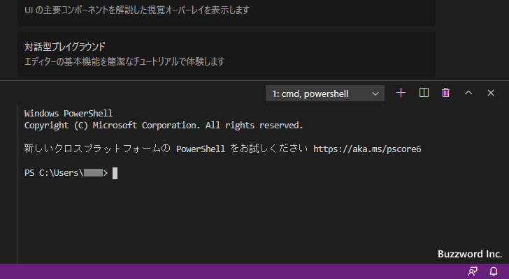
シェルとして起動するプログラムをフルパスで指定する
ターミナルで起動するシェルとしてプログラムをフルパスで指定することもできます。「ファイル」メニューの中の「ユーザー設定」をクリックし、表示されたサブメニューの中から「設定」をクリックしてください。
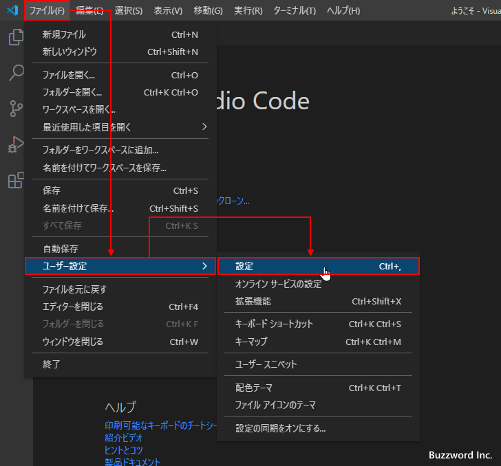
Visual Studio Code の設定画面が表示されます。
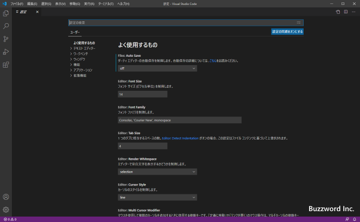
画面上部の検索ボックスに「terminal.integrated.shell」と入力してください。いくつか設定項目が表示され、対象の OS 毎に設定項目が分かれていますが、 Windows 環境の場合は「Terminal>Integrated>Shell:Windows」が関係する設定項目です。この中にある「settings.jsonで編集」をクリックしてください。
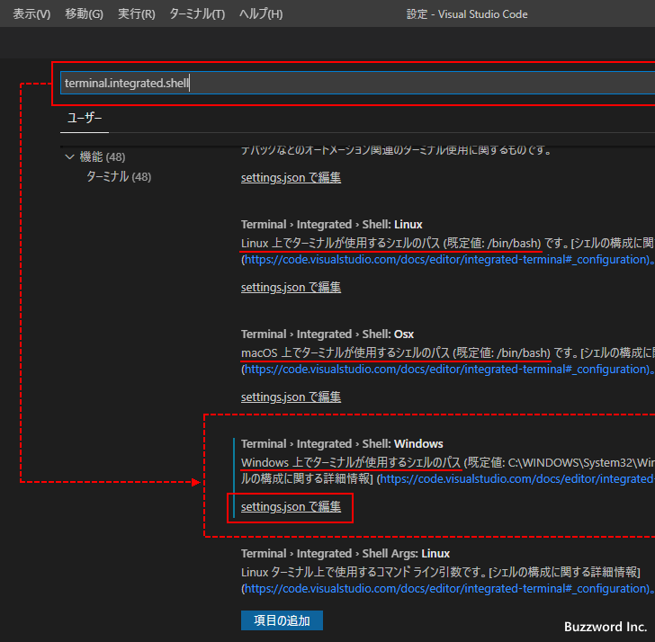
settings.json ファイルの中の該当箇所が表示されます。
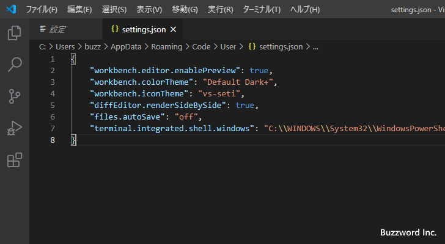
terminal.integrated.shell.windows の値が起動するシェルのプログラムです。 Visual Studio Code の設定で起動するシェルを変更すると自動的に書き換わります。現在は Windows PowerShell が設定されているため次のように記述されています。
"terminal.integrated.shell.windows": "C:\\WINDOWS\\System32\\WindowsPowerShell\\v1.0\\powershell.exe"
別のプログラムをシェルとして起動する場合には、ここに起動するプログラムをフルパスで指定します。(バックスラッシュはエスケープが必要です)。例えばコマンドプロンプトに変更するには次のように記述します。
"terminal.integrated.shell.windows": "C:\\WINDOWS\\System32\\cmd.exe"
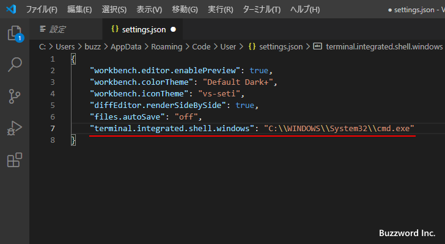
設定を変更したら「ファイル」メニューの中の「保存」をクリックして変更内容を保存してください。これで起動するシェルの変更は完了です。
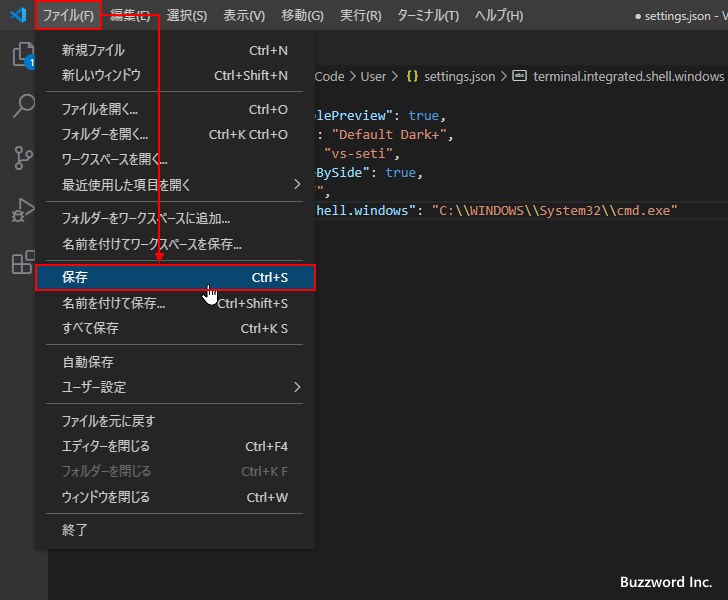
新しいターミナルを開いてみると、設定したコマンドプロンプトがシェルとして起動します。
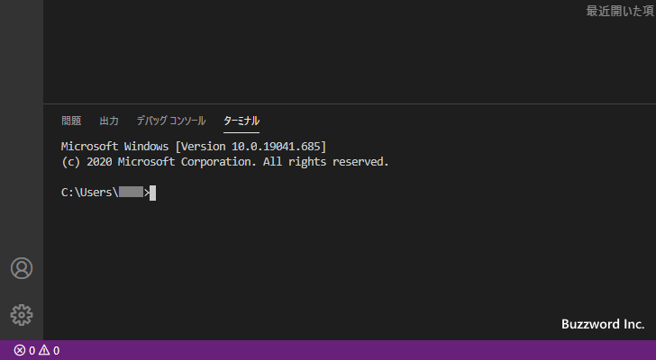
-- --
Visual Studio Code でターミナルを開いた時に起動するシェルを変更する手順について解説しました。
( Written by Tatsuo Ikura )

著者 / TATSUO IKURA
初心者～中級者の方を対象としたプログラミング方法や開発環境の構築の解説を行うサイトの運営を行っています。